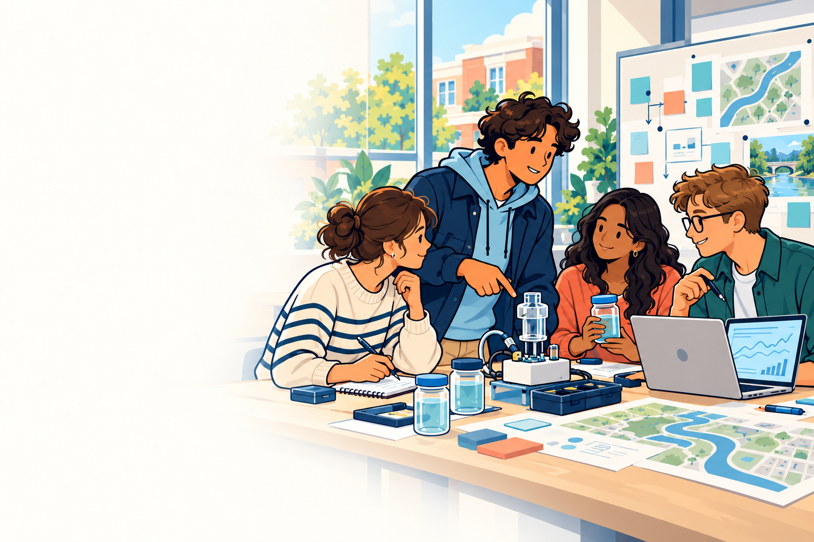

Making Real-World Learning Work
A proposal to help universities organize student teams across disciplines, so more students can learn through real problems with community partners.
Explore →I bring experience in customer-centered design, product leadership, and project delivery to new challenges in education, public good, and health.

Northbound Works brings together my projects and writing on education, technology, and the systems that shape people’s opportunities.
I help teams solve complex problems and turn ideas into practical improvements. For over 25 years, I’ve worked in customer-centered design, product leadership, and project delivery at Accenture, Cisco, and Cisco Meraki.
I’m studying Educational Innovation, Technology, and Entrepreneurship at UNC–Chapel Hill and applying that experience to education.
My approach is to set direction, connect people, remove obstacles, and test ideas in practice. I want to apply this experience in education, public good, and health.
Writing, projects, and practical explorations of education, work, and what comes next.

A proposal to help universities organize student teams across disciplines, so more students can learn through real problems with community partners.
Explore →A brief exploring how universities can help students build experience and judgment as AI changes entry-level work.
Explore →
A parent’s reflection on starting college planning earlier, helping families connect students’ interests with practical steps and informed choices.
Explore →
An early-stage product concept exploring how students, parents, and counselors can turn college goals into academic plans they review together.
Explore →Interested in collaborating or have a project in mind? I'd love to hear from you.